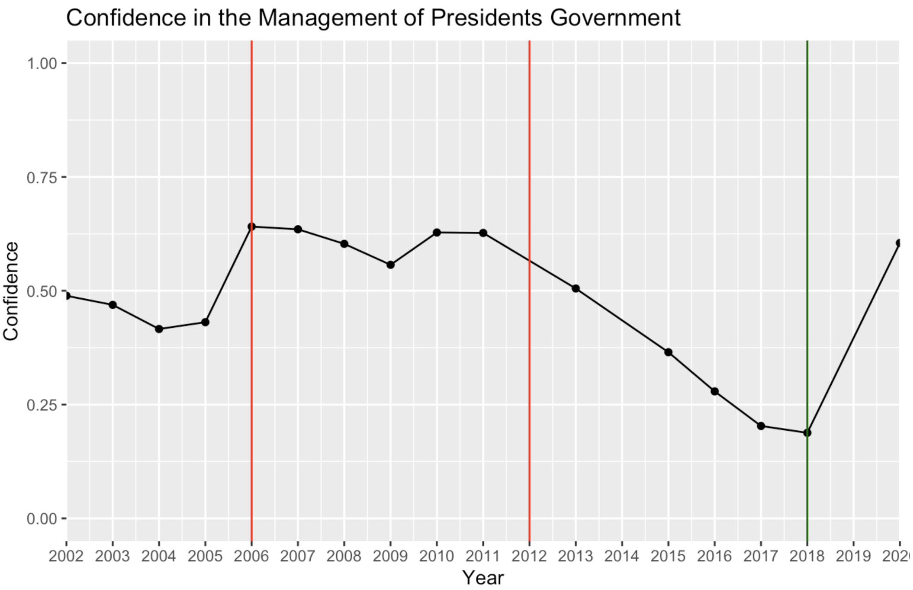
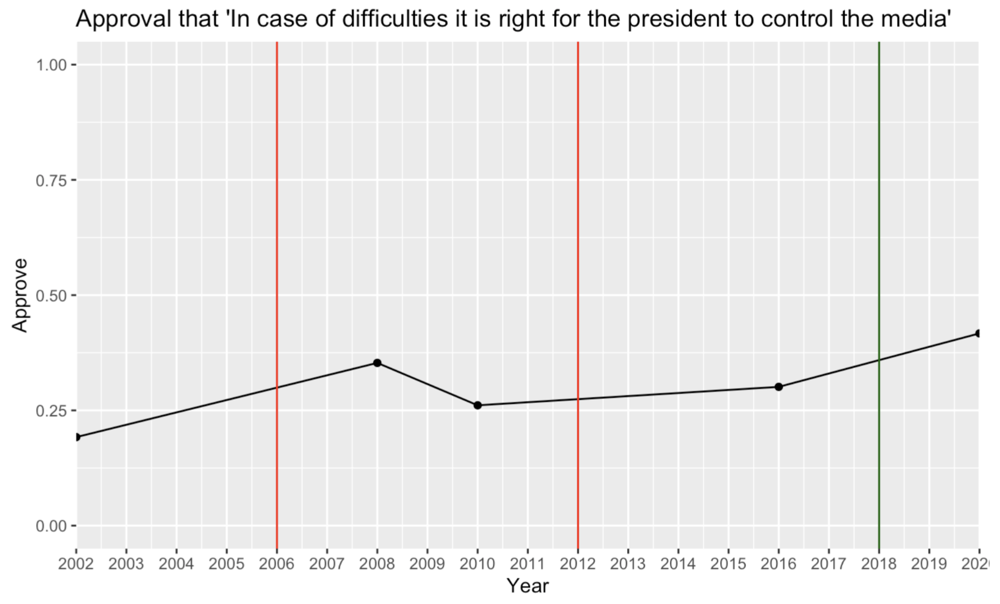

Behind AMLO’s Electoral Reforms
Ideology, Power, and MORENA’s Future
Executive Summary
This brief explores the why behind President Andrés Manuel López Obrador’s (AMLO) contentious reforms targeted at the National Electoral Institute (INE) and the Federal Electoral Tribunal (TEPJF) in Mexico. The brief identifies three ulterior motives behind AMLO’s reforms. Firstly, AMLO’s ideological tendencies underpin these reforms, characterized by a belief in representing the ‘pure’ will of the Mexican people against ‘corruptible’ establishment elites, aiming to replace existing institutions with his interpretation of popular will. Secondly, it highlights AMLO’s pursuit of heightened presidential authority, evident in attempts to curtail the autonomy of electoral institutions and establish greater executive control over electoral arbitrators. Thirdly, the reforms serve to expand AMLO’s newly dominant political party, MORENA, by granting advantages to incumbents through expanded propaganda definitions and leveraging dissatisfaction with the weakened state to perpetuate their dominance.
This brief will go on to provide a background of the issue, an in-depth elaboration of AMLO’s three ulterior motivations, and a brief implications section.
Background
INE has played a central role in the Mexican democratic system. Since the establishment of its predecessor, the Federal Electoral Institute (IFE), it has served as the crucial organization that facilitated democratization. The INE is an autonomous and independent organ in the Mexican government that is the authority and organizer of elections. The transformation of the IFE into the INE occurred with a reform in 2014, however it is perceived as a continuation (INE n.d.). This electoral body is widely regarded, as Denise Dresser says, as “the jewel in the crown of Mexico’s democratic transition” (Dresser 2022). Before the IFE and during PRI (Partido Revolucionario Institucional) hegemony, the presidential subordinate secretary of the interior managed the elections, allowing the president the possibility of interfering with elections. In 1990, the IFE was created to be an autonomous electoral body capable of managing elections independently (INE n.d.).
AMLO’s electoral reforms unfolded in two distinct waves: Plan A and Plan B. Plan A was a constitutional reform proposed in November 2022 aimed at reducing budgets, authority, and institution size within electoral bodies, ultimately failing to secure the required majority vote in December of the same year. Subsequently, in March 2023, a second wave emerged with AMLO introducing alternative electoral reform laws, Plan B. They were ultimately passed but nullified by a series of Supreme Court decisions due to procedural issues and constitutional challenges. AMLO declared that the reforms were intended to safeguard democracy (Reyes and Laborde 2023). However, AMLO’s emphasis on protecting democracy contradicts the hurried absence of democratic deliberation for the Plan B reforms in Congress. Additionally, the backlash in protests fighting against the reforms, the fundamental overhaul of cherished democratic institutions, and the partisan nature of the reforms all were contradictions implying underlying motives behind his actions (Reyes and Laborde 2023).
The neutrality and independence of the INE from politics have bestowed upon it a central role in democratization and fostering confidence in the fairness of elections. While reforms have progressively enhanced the authority and autonomy of the INE, recent proposals by the current President, AMLO, have faced significant public backlash. They have highlighted the consequential nature of the reforms and AMLO’s unyielding stance in undermining democratic institutions. The proposed reforms sparked widespread protests and controversy under the banner of #ElINENoSeToca (#Don’tTouchINE). In February, hundreds of thousands of people protested in Mexico City’s Zocalo, donning the color pink symbolizing support for the INE (BBC News Mundo 2023). These protests vividly demonstrated a widespread public disapproval of AMLO’s proposed reforms (Kitroeff 2023).
It is important to note that these reforms have deeply divided Mexico. Nevertheless, the majority of Mexicans support even the most contentious aspects of the reform, with 52% in favor of Plan A’s transformation of the INE into the INEC, and 53% supporting the removal of state electoral institutions (Raziel 2022a). Other controversial parts of the reform have garnered higher approval, such as 78% approval for Mexicans to vote for electoral functionaries (Raziel 2022a). In terms of Mexican political parties, there has been significant pushback against the reforms. MORENA’s Juntos Hacemos Historia Coalition has offered complete support for the reforms. However, all other major parties, which collectively constitute the remaining half of Mexican political parties, have explicitly denounced these reforms (Zerega 2023). This includes PRI, PAN (Partido Acción Nacional), PRD (Partido de la Revolución Democrática), and MC (Movimiento Ciudadano).
Analysis of Aims of Reforms
This section will begin by analyzing the important clauses of the reforms. Then it will be synthesizing three key motivations of the president’s actions: a fulfillment of AMLO’s personal ideological leaning with populist and anti-establishment tendencies, the desire to centralize power within AMLO’s executive, and ensure MORENA’s ongoing political success in pursuit of party hegemony. Alarming Nature of Reforms
To grasp the disruptive and far-reaching implications of the reforms, it is essential to know its unprecedented nature. Prior electoral reforms involved participation from opposition parties and civil society from 1977 to 2014, however AMLO’s reform proposals were entirely crafted by the ruling party to be introduced for a vote.
Plan A outlined AMLO’s ideal vision for a constitutional reform that aimed to overhaul the role of the INE and electoral authorities, among other changes. The proposed reform involved replacing the INE with the INEC (Instituto Nacional de Elecciones y Consultas), reducing INEC counselor numbers from 11 to 7, and implementing a voting process via plebiscite to select counselors and TEPJF magistrates from a list provided by the three branches of power. Additionally, the reform sought to decrease senators from 128 to 96 and lower house deputies from 500 to 300 (Raziel 2022b). This initiative also intended to cut public financing for political parties, reducing the overall “cost of democracy” by an estimated MX$24 billion pesos (AMLO 2022). The INEC would have significantly downsized the INE, reallocating many of its functions, such as maintaining accurate registries and issuing electoral IDs, to various secretaries under the president’s supervision. However, lacking the required 2/3 supermajority vote in Congress, these constitutional changes ultimately faced rejection (DW 2022).
Plan B proposed a law that could pass with a simple majority in Congress, a majority held by AMLO’s party MORENA and its coalition. While not entirely overhauling the electoral system like the constitutional reforms, Plan B still threatened INE’s autonomy. The key elements of the reform revolved around increasing the executive branch’s influence over the INE. This involved several modifications, such as granting the executive the power to directly intervene in the voter registry, impacting resource allocation and voting locations. Additionally, the Secretary of Foreign Affairs would handle the registry abroad, and constraints on how the INE could utilize its funds, particularly leftover funds, were imposed (Reyes and Laborde 2023). Plan B also marginalized the role of INE’s general council president, which is seen as a way to debilitate INE’s authoritative capacity. Another contentious aspect was the Ley General de Comunicación Social, which redefined the notion of propaganda by officeholders (Bravo 2023). This redefinition allowed officeholders to utilize public funds to disseminate campaign materials and rhetoric. Ultimately, although Congress passed these laws due to the MORENA majority, courts nullified them later due to their negligent passage and unconstitutional infringement on the INE’s autonomy (Raziel 2023).
(1) Part of a Rise in Anti-Democratic Rhetoric
The main driver of the reforms for AMLO was his personal and ideological animosity towards the INE. The reforms’ intention ties directly to AMLO’s rise to power and his beliefs. Starting political life during the PRI’s dominance in the 1970s, AMLO later aligned with the left-wing PRD. His prominence grew within the PRD after becoming Mexico City’s head of government in 2000. Narrowly losing the 2006 presidency bid to Felipe Calderon, AMLO alleged election fraud, sparking large protests. AMLO continues to attest that he in fact won the 2006 election and that the electoral institutions rigged the election (Sánchez-Talanquer and Greene 2021). Again in 2012, he lost to Enrique Peña Nieto and accused him and the electoral institutions of corruption. AMLO’s influential persona in Mexican politics, particularly within MORENA, has fueled a long-standing animosity between his base and the electoral institutions dating back to 2006. This personal antagonism appears to reach a climax with the electoral reforms (Sánchez-Talanquer and Greene 2021).
In 2018, AMLO triumphed in the presidential race under his newly formed party, MORENA. By 2023, MORENA controls the presidency, a coalition dominating Congress, and the governorship of states with 68.2% of Mexico’s population (Becerril Romo 2023). AMLO’s ideology, encapsulated in the “fourth transformation” of Mexico, seeks to uplift the marginalized, dismantle corrupt elites, and empower ordinary Mexicans (Fuentes 2018). He contrasts his movement with the established PRIAN (PRI and PAN), branding them the “mafia in power” (Monsiváis-Carrillo 2023). Dissatisfaction after 18 years of PAN and PRI rule fueled support for AMLO’s anti-establishment stance, evident in presidential approval ratings (see Figure 1). Other than AMLO’s personal animosity toward the INE it is evident that his anti-establishment ideology easily fits in the INE, as being part of the corrupted elites that must be cleansed.
Following the lackluster recall referendum in 2022 and amid a period of intense tension between electoral institutions and AMLO, the reforms were called. I will argue that this was not a coincidence. AMLO’s government provided only $77 million USD for the referendum, covering just half of the necessary expenses for election preparations, as noted by election officials (Kahn 2022). Consequently, this led to a turnout of merely 17% of the electorate, far below the 40% required for validity, despite 91.8% support for AMLO (BBC News Mundo 2022). AMLO criticized the INE for incompetence and accused them of “sabotaging” the referendum (Starr 2022).
During the period leading up to the referendum, AMLO displayed illegal propaganda in the form of billboards, tweets, and other materials under the slogan #QueSigaElPresidente. Despite INE denouncements and TEPJF support of their judgment, AMLO persisted in disseminating illegal pro-AMLO propaganda during the plebiscite, displaying defiance (Villanueva Ulfgard 2023). This ongoing conflict underscored the president’s animosity towards institutions that opposed him and contributed to the subsequent push for electoral reforms.
(2) Executive Power Centralization
Through the reforms, AMLO has expanded the reach of the Executive branch onto the institutions that are supposed to hold the president accountable. It recalls the PRI hegemonic rule of the 20th century, where Mexico was controlled by one party, the PRI, under the guidance of a one-term president. AMLO’s degradation of horizontal accountability points to this rule, which has only been eliminated since the 2000’s. The IFE was a pivotal institution for democratization and the decentralization of the executive with an institution that could independently secure Mexico’s free and fair elections. The INE stands in the way of AMLO’s hyper-presidential aspirations (Villanueva Ulfgard 2023).
AMLO is leveraging the current low confidence in institutions and his populist ideology to solidify his executive advantage. There is a notable convergence between the declining confidence in the INE and a growing trust in the president’s ability to make authoritarian decisions (see Figures 2 & 3). For instance, in 2002, only 19.2% of Mexicans supported the idea of the president controlling the media in case of difficulties (LAPOP 2020). However, this figure has steadily risen over the years, reaching an all-time high of 41.7% in 2020 (LAPOP 2020). Conversely, confidence in the INE stood at 52.2% in 2006 but dropped to its lowest point of 33.1% in 2018, the year of AMLO’s election (LAPOP 2020).
This convergence of low confidence in the INE and high confidence in executive discretion creates an opportunity for AMLO to mount attacks on the INE. His embrace of populist ideals and reforms ensures higher popular approval. One significant aspect of this appeal to popular approval is his advocacy for a plebiscitary democratic order in Mexico, which was reflected in the proposed reforms. In Plan A, AMLO pushed for direct elections for the functionaries of the electoral organs from a list proposed by each one of the three. political branches. Unlike a purely direct democratic approach, AMLO and his political allies in other branches would act as intermediaries between the election of the functionaries, choosing the candidate list, and calling for these elections. AMLO utilizes the popularity of universal elections of functionaries but secures his power by being one of the powers that offer a list of candidate functionaries for election. His popularity and ability to directly communicate with the people through his mañanera conferences make it easy for him to convince his base to elect the functionaries of his choice (NBC News 2021).
The expansion of executive power is further evident in Plan B of the reforms. Plan B seeks to undermine horizontal accountability by compelling the INE to collaborate with executive influences. As detailed in the background, critical responsibilities such as maintaining the electoral registry would be required to involve the executive branch secretariats, in addition to adding limitations to how the INE can use its finances. This increased executive influence over key roles within the INE accompanies a substantial decrease in the INE’s institutional capabilities, notably through significant staff cuts, as illustrated in Table 1.
These cuts undermine the INE’s capacity to fulfill one of its primary functions, which is to provide professional electoral services. Simultaneously, by reducing the INE’s power through authority and budget cuts, the reforms create a power vacuum. This vacuum is then expanded upon by the executive branch, which seeks to assert control in the absence of INE’s previously held authority.
(3) Continued Party Expansion
MORENA is still a young political party that has only been registered since 2014, yet in less than a decade, it has transformed the political landscape in Mexico. Currently, MORENA holds 252 out of 500 seats in the Chamber of Deputies (Cámara de Diputados 2021), 59 out of 128 seats in the Senate (Senado de la República n.d.), and 22 out of 32 state gubernatorial offices (Linares 2023). MORENA has expanded its influence to control half of Mexico’s political landscape.
In many ways, MORENA capitalized on the unsuccessful outcomes of Mexico’s weak state capacity. This was because the lackluster results led to dissatisfaction with established parties, thus allowing for MORENA’s grand entrance in 2018 (Sánchez-Talanquer and Greene 2021). However, as MORENA grapples with its own challenges related to weak state capacity and confronts obstacles in driving social progress, doubts arise regarding its ability to maintain its political expansion. With only three election cycles in which MORENA has participated, there is a concern about its rapid growth, which could potentially be unsustainable or begin to stagnate if public sentiment towards MORENA sours. The electoral reforms were designed to ensure the party’s continued expansion.
The proposed reforms aimed to help this expansion in multiple ways. Firstly, they seeked to leverage the weak state to their advantage. AMLO likely thought that his proposals would not pass, but they present an image of active efforts to dismantle the corrupt establishment and improve the weak state. When the reforms met with resistance from PRIAN, it portrayed the PRIAN as obstacles to progress while positioning AMLO and his party as proponents of progress. Rather than MORENA being weighed down by a lack of institutional capacity AMLO is using it to his advantage.
Secondly, if the reforms had passed, they would have provided his party an advantage through clauses in the reforms. For example, the Ley General de Comunicación Social in Plan B would have broadened the definition of propaganda, allowing government officials to disseminate information as they deemed fit. This would have provided significant advantages to incumbents in races, particularly benefiting MORENA, which already controls a large part of influential government offices.
Finally, there are many other parts of the reforms that would implicitly allow for the protection of the party. However, the infamous Cláusula de la Vida Eterna (The Eternal Life Clause) would allow political parties to transfer votes received by the electorate to other parties (Vallejo 2022). MORENA has significant political alliances with smaller parties in its coalition like the Partido de Trabajo and the Partido Verde Ecologista de México. This clause would enable larger parties to artificially sustain small or dying parties for political gain, which could be essential as a way to repay political favors and execute other political maneuvers. The reform was ultimately excluded from the formal reform proposals, but they show the intent with which the reforms were introduced to assist the party politically (Reyes and Laborde 2023).
Implications
The reforms ultimately did not pass, but they will undoubtedly be influential. They have set a precedent for the ability of the executive to introduce sweeping reforms with a lack of legislative debate. This has also shown that by framing these controversial laws to the palate of the majority of the electorate, passing these reforms is plausible. Democratic backsliding because of the reforms is undeniable. Now, it leads to the question of whether taking up the torch for a Plan C could come in the form of the MORENA presidential candidate Claudia Sheinbaum. The resilience of Mexico’s democratic foundations faces a pivotal test in the coming years, as the aftermath of these failed reforms could prompt a critical reassessment of the nation’s commitment to upholding democratic norms and principles amidst mounting political challenges.
Works Cited
AMLO. 2022. “Presidente presenta iniciativa de reforma electoral; incluye creación del INEC y reducción de gasto a partidos políticos.” April 28, 2022. Link.
BBC News Mundo. 2022. “Revocación de mandato: AMLO vence en el primer referendo revocatorio de México para que continúe como presidente con una participación del 17%.” BBC News Mundo, April 11, 2022. Link.
BBC News Mundo. 2023. “Por qué causa tanta polémica la reforma electoral de AMLO que desató protestas masivas en México.” BBC News Mundo, February 27, 2023. Link.
Becerril Romo, Antonio. 2023. “Con la conquista del Estado de México, Morena gobierna a 7 de cada 10 mexicanos.” El Economista. June 4, 2023. Link.
Bravo, Jorge. 2023. “Ley General de Comunicación Social, inconstitucional.” El Economista. February 17, 2023. Link.
Cámara de Diputados. 2021. “Integrantes de La LXIV Legislatura.” July 30, 2021. Link.
CNN Español. 2022. “Cámara de Diputados de México rechaza reforma electoral de AMLO.” CNN (blog). December 7, 2022. Link.
Dresser, Denise. 2022. “Mexico’s Dying Democracy.” Foreign Affairs, October 21, 2022. Link.
DW. 2022. “Diputados rechazan la reforma electoral de López Obrador.” DW. December 7, 2022. Link.
Fuentes, Yngrid. 2018. “Qué es la ‘Cuarta Transformación’ que propone AMLO para México y por qué la llama así.” BBC News Mundo, October 4, 2018. Link.
INE. n.d. “Historia.” Instituto Nacional Electoral (blog). Accessed December 8, 2023. Link.
Kahn, Carrie. 2022. “Here’s Why Mexico’s President Is Launching a Vote to Recall Himself.” NPR, April 9, 2022, sec. World. Link.
Kitroeff, Natalie. 2023. “Más de 100.000 personas protestan en México contra las modificaciones al INE.” The New York Times, February 26, 2023, sec. En español. Link.
LAPOP, Latin American Public Opinion Project. 2020. “Latin American Barometer 2020.” Link.
Linares, Israel López. 2023. “Un estado más para Morena; así queda el mapa político de México este 2023.” Forbes México. June 5, 2023. Link.
Monsiváis-Carrillo, Alejandro. 2023. “Happy Winners, Sore Partisans? Political Trust, Partisanship, and the Populist Assault on Electoral Integrity in Mexico.” Journal of Politics in Latin America 15 (1): 72–95. Link.
NBC News. 2021. “Mexican President’s Weekday Morning Show Proves an Effective Tool to Reach the Country.” NBC News. January 4, 2021. Link.
“Plan B and the Future of Democracy in Mexico | CSIS Events.” 2023. March 21, 2023. Link.
Raziel, Zedryk. 2022a. “Una encuesta del propio INE muestra que la mayoría de mexicanos respalda la reforma electoral de López Obrador.” El País México. November 2, 2022. Link.
Raziel, Zedryk. 2022b. “La reforma electoral de López Obrador pretende sustituir a todos los integrantes del INE y el Tribunal Electoral antes de plazo.” El País México. November 23, 2022. Link.
Raziel, Zedryk. 2023. “La Suprema Corte asesta el golpe final y anula por completo el ‘plan B’ electoral de López Obrador.” El País México. June 22, 2023. Link.
Reyes, Javier Martín, and María Marván Laborde. 2023. “Radiografía del Plan B: La Reforma Electoral de 2023 a examen.” Link.
Sánchez-Talanquer, Mariano, and Kenneth F. Greene. 2021. “Is Mexico Falling into the Authoritarian Trap?” Journal of Democracy. Number 2021. Link.
Senado de la República. n.d. “Por Grupo Parlamentario.” Accessed December 8, 2023. Link.
Starr, Pamela. 2022. “Extending Morena’s Dominance of Mexican Politics: The 2022 Recall Referendum | Wilson Center.” April 4, 2022. Link.
Vallejo, Guadalupe. 2022. “La transferencia de votos, un tema inconstitucional que frenó la reforma de AMLO.” ADNPolítico. December 16, 2022. Link.
Villanueva Ulfgard, Rebecka. 2023. “López Obrador’s Hyper-Presidentialism: Populism and Autocratic Legalism Defying the Supreme Court and the National Electoral Institute.” The International Journal of Human Rights 27 (8): 1267–91. [Link](https://doi.org/10.1080/136
Figures
Figure 1.

Note. Each vertical line represents a new presidential term. The green line represents AMLO’s 2018 election victory (LAPOP 2020).
Figure 2.

Note. The graph shows that confidence in the INE overtime has been decreasing. Each vertical line represents a new presidential term. The green line represents AMLO’s 2018 election victory (LAPOP 2020).
Figure 3.

Note. The approval of the president controlling the media in times of difficulties has been going up over time. Each vertical line represents a new presidential term. The green line represents AMLO’s 2018 election victory (LAPOP 2020).
Tables
Table 1. Reductions in the Staff of Servicio Profesional Electoral Nacional (SPEN)
| Part of INE | Staff Before Reforms | Staff After Reforms |
|---|---|---|
| Headquarters | 413 | Unknown |
| Local Boards | 358 | 96 (-262) |
| District Boards | 1,800 | 300 (-1,500) |
| Total | 2,571 | 396 (-2,175) |
Note. The proposed dramatic reductions in staff will significantly decrease the resource capacity that the INE (Instituto Nacional de Estadística or National Institute of Statistics) will have in a clear and dramatic manner (“Plan B and the Future of Democracy in Mexico | CSIS Events” 2023).